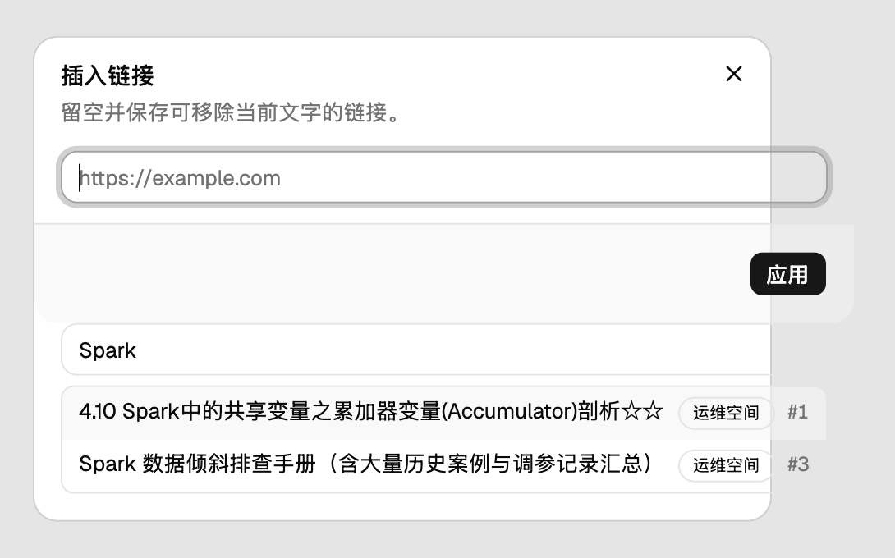
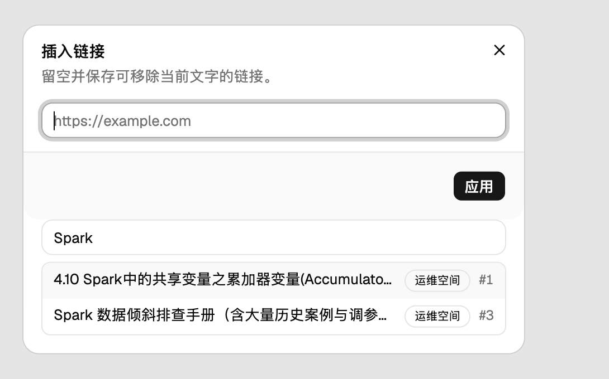

本地真机：1280×900 视口、2 倍截屏、真实 API 与真实数据；搜索词
Spark，候选为两篇长标题页面。截图只裁了对话框周边。


实测数字（同一视口、同一批数据）：
scrollWidth 499 > 448（溢出 51px），修复后 448 = 448。#编号 右缘：修复前在对话框右边界之外 24px，修复后在右边界内 27px。32px，长标题与短标题一致。scrollWidth 357 = clientWidth 357（没截断），修复后 357 > 306（带省略号截断）。
这组图片只是本单的验收证据，不属于产品文档；合并前用
git rm -r .review 一条命令即可清掉。